Laboratory director
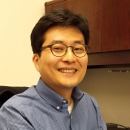
Ziho Kang
- Dr. Kang is currently a tenured Associate Professor in Industrial and Systems Engineering at the University of Oklahoma (OU)
- He received his Ph.D. from Purdue University and worked as a postdoctoral researcher at University of Virginia and Drexel University prior to joining OU.
- Dr. Kang's background is in human factors, human-integrated systems engineering, and data analytics. Kang’s specialty is in developing algorithms and mathematical models that can discover significant patterns from spatial-temporal data, especially humans' eye movement networks, that can be used to evaluate humans' performances or predict humans' behaviors. The research results can be used to inform the design of human-centered systems. Brain activities and haptic interactions and can also be characterized and clustered to reveal significant patterns. Application areas include air traffic control, weather forecasting, commercial advertisement, driving, aircraft piloting, Deepwater Horizon operations, higher education, virtual reality, among others.
- Email: zihokang@ou.edu
Current students (listed in chronological order)
Ph.D. students
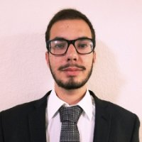
Ricardo Palma Fraga
- Ph.D. candidate
- He has been conducting research in analyzing visual scanning patterns and verbal protocols for the FAA. Ricardo won the Best Poster Presentation Award at the FAA SOAR meeting, Philadelphia, PA. in 2018. Ricardo was an undergraduate at OU when he first started working with Dr. Kang. Ricardo received his M.S. degree on analyzing expert air traffic controllers' visual scanning strategies and aircraft mitigation strategies. Ricardo will be working at Amazon during the Summer, then return to continue his Ph.D. study in virtual reality with Dr. Kang. Ricardo is supported by Dr. Kang's NSF CAREER Award and FAA project.
- Email: rpalmafr@ou.edu
Junehyung Lee
- Ph.D. student
- June's M.S. thesis is on classifying visual scan path sequences using Dynamic Time Warping, Multi-dimential Scaling, and DBSCAN. June will be continueing his Ph.D. study with Dr. Kang. June is supported by Dr. Kang's NSF CAREER Award and FAA project.
- Email: junehyung_lee@ou.edu
TBD
- Graduate and undergraduate students will be recruited during the Summer to assist with Dr. Kang's research projects.
Students who previously conducted research at the HFS labortory
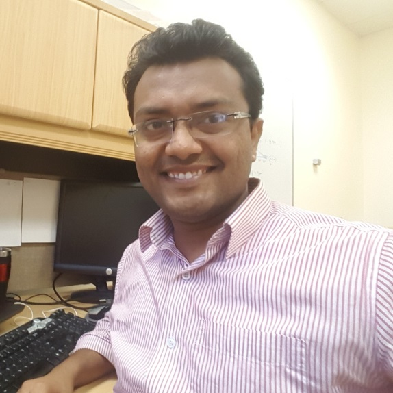
Saptarshi Mandal
- Ph.D. in Industial and Systems Engineering
- Saptarshi received his B.Tech in Industrial Engineering from IIT Kharagpur, India in 2011. After graduation, he worked in PwC India as a consultant for a year and a half. He joined the HFS lab in 2015. His work at the HFS Lab involves analyzing eye tracking data applicable to air traffic control using different mathematical tools such as the Graph Theory and the Markov process. He received his M.S. degree (received Best ISE M.S. Thesis Award) in Dec. 2016 and started his Ph.D. in Jan 2017.
- Saptarshi won the Best Student Paper Award in Aerospace TG at the 2016 Human Factors and Ergonomics Conference.
- Saptarshi developed various methods to analyze the eye tracking data for the Ph.D. study.
- Dr. Saptarshi Mandal is currently working at Microsoft Corporation.
- Email: Saptarshi.Mandal-1@ou.edu
Salem. M. Naeeri
- Ph.D. in Industial and Systems Engineering
- Fellowship
- Salem's M.S. thesis topic is on characterizing human errors during aircraft maintenance.
- Salem's Ph.D. topic was on the multimodal and correlation analysis of eye movement characteristics and fatigue between novices and experts for a piloting task using B-52 combat aircraft.
- Dr. Salem Naerri is currently working as a data analyst in Dallas, TX.
- Email: Salem.M.Naeeri-1@ou.edu
Austin Graham
- Ph. D. student in Computer Science (Advisor: Dr. Christian Grant)
- Austin is a Ph.D. student under Dr. Christan Grant in the Department of Computer Science. His interests involve human computer interaction, particularly focusing in machine learning and the effects human expertise can have on the design of data pipelines. Previous work has also included large scale recommender systems and alternative uses for Generative Adversarial Networks. He received a BS in Computer Science at the University of Oklahoma and is concurrently finishing an MS in Computer Science. Austin has been a RA in the HFS lab to assist on data analytics through machine learning. Austin has ventured out to create his own company.
- Email: austin.graham@ou.edu
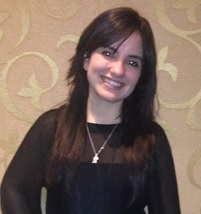
Melissa Rosa Plata
- M.S. in Industial and Systems Engineering
- Melissa received B.S from UPRM (Abet Acredited). She previously worked for two pharmaceutical companies: Fresenius Kabi & Eli Lilly and Company. Proficient in editing and creating Standard Operating Procedures, in GDP and GMP, ISO regulations and OSHA standards. She joined HFS Lab in May2018. Melissa received the Directors Graduate Scholarship award for 2018-2019. She is bi-lingual in English & Spanish.
- Melissa received her M.S. thesis on Universal Design for Leaning and multimodal training.
- Email: mrp@ou.edu

Uchenna Kelvin Egwu
- M.S. in Industial and Systems Engineering
- Kelvin conducted research in various topics within area of human factors. He is currently working as an environmental permits specialist at the Texas Commission on Environmental Quality.
- Email: kelvin.egwu@ou.edu
Jamie Jezier
- Research Assistant (Fall 2018)
- Undergraduate student
- Jamie has been assisting the research and document preparation of the FAA COE project. Jamie is currently working at Gore-Tex.
- Email: jjezier@ou.edu
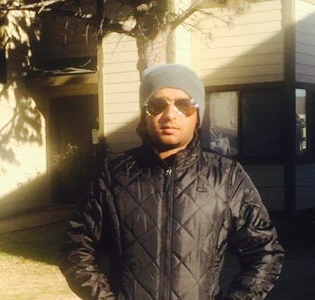
Abdulrahman M. Khamaj
- Ph.D. in Industial and Systems Engineering
- Fellowship
- Abdulrahman received his B.S. in Industrial Engineering from Jazan University, Saudi Arabia in 2011. He also received his M.S. in Industrial and Systems Engineering from University of Oklahoma in May 2015. His previous research was dedicated to measuring the distraction that in-vehicle infotainment systems cause to motorcycle riders. He joined the HFS lab in 2016. His performs usability research of mobile weather applications.
- Dr. Abdurahman Khamaj is currently an Assistant Professor in Industrial Engineering at Jarzan University, Saudi Arabia.
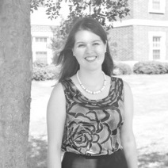
Elizabeth M. Argyle
- Co-adviser: Dr. Randa Shehab
- Ph.D. in Industial and Systems Engineering
- Elizabeth obtained her Ph.D. in May 2016. Elizabeth has a background in human factors, and her research interests include human-computer interaction, situation awareness in sociotechnical systems, and decision making under uncertainty. She was fully supported by NOAA. She has been using eye tracking to assess the relationship between decision support automation and situation awareness in the weather forecasting domain.
- Dr. Elizabeth Argyle has been a Research Fellow in the Institute of Aerospace Technology at the University of Nottingham, UK.
Sarah McClung
- M.S. in Electrical & Computer Engineering
- Sarah received her B.S. in Electrical Engineering from Texas A&M University in December 2013, and became a student at the University of Oklahoma in Fall 2015. Her work at the Lab involved characterization and analysis of eye tracking data applicable to air traffic control. She received her M.S. egree in ECE and is currently running a private consulting business. She is still affliated to the HFS lab assisting research when available.
- Sarah is currently working in Austin.
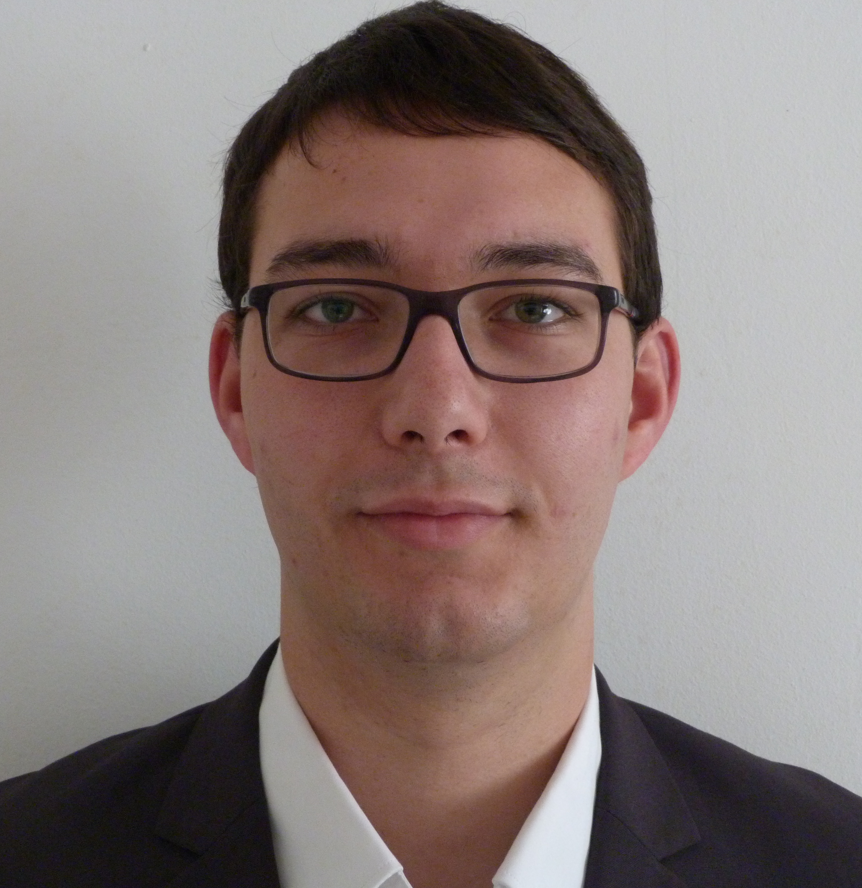
Lucas Cezard
- M.S. in Industrial and Systems Engineering
- Part of the collaborative degree between OU and the ISIMA, a French engineering school in Clermont-Ferrand, France.
- Cezard has a background in scientific computing and modeling. His interests include both modeling and data analysis. He received his M.S. degree in Dec. 2017. His thesis topic was investigating methods to increase the usability of haptic devices.
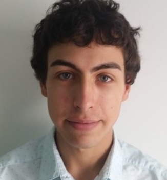
Lucas Mosoni
- M.S. in Industrial and Systems Engineering
- Mosoni takes part in the collaborative degree between OU and the ISIMA, a French engineering school in Clermont-Ferrand, France.
- He received an equivalent to a Bachelor's Degree in Computer Science from ISIMA
- Mosoni joined the CEDM lab within the scope of a Master's thesis at the end of Fall 2016 and his work will involve the analysis of eye tracking data recorded during the use of an online healthcare application. His research will include more specifically the study of patterns in the visual scan paths in order to determine different types of reading behaviors and to assess the comprehension of the information provided by the online healthcare application. He received his M.S. degree in Dec. 2017.
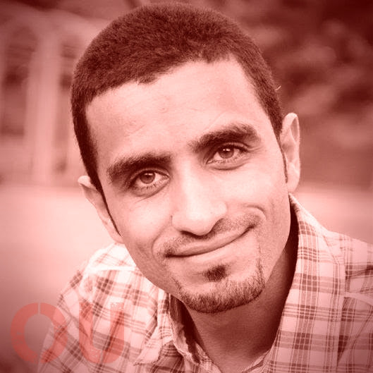
Amin G. Alhashim
- Ph.D. Student
- Alhashim received his B.S. and M.Sc. degrees in Computer Science from King Fahd University of Petroleum and Minerals (KFUPM), Saudi Arabia in 2005 and 2009 respectively.
- He participated in teaching several introductory Computer Science courses while at KFUPM until joining the Computer Science program of the University of Wisconsin-Madison (UW-Madison) in 2013.
Jiwon Jeon
- Research Assistant
- M.S. student in Data Science & Analytics
- Jeon received her B.S. from Seoul National University, and received her M.S. in Petroleum Engineering from the University of Oklahoma in 2016. Her previous research involved analysis on tubular tracking to collect the operational limit data and to secure productivity and safety. She joined the Data Science and Analytics (DSA) program in Fall 2016. Her interest is in human factors and data analytics. She has been conducting research in deepwater horizon operations (i.e. offshore oil drilling) to analyze accidents and human risk. She is currently working as a counsultant in data analytics in Dallas, TX.
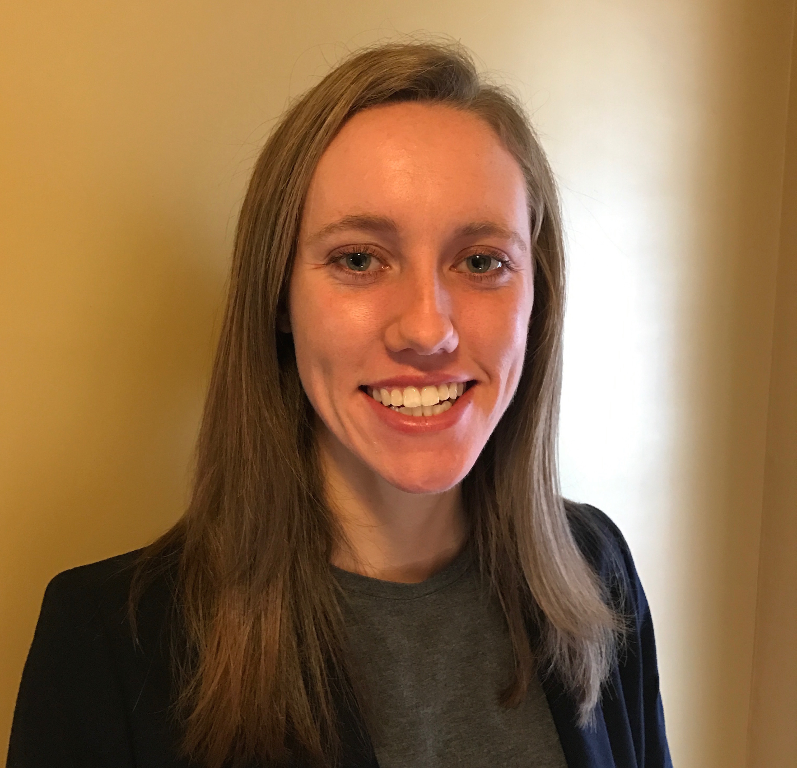
Lauren N. Yeagle
- Research Assistant
- M.S. student in ISE
- Email: lauren.yeagle@ou.edu
- Lauren joined the HFS lab in Jan. 2017.
- She has been conducting research in Universal Design for Learning (UDL) to increase the performance of FAA Academy candidates.
- Lauren won the "Outstanding Senior Award" and the “George T Gibson Industrial Engineering Scholarship.”
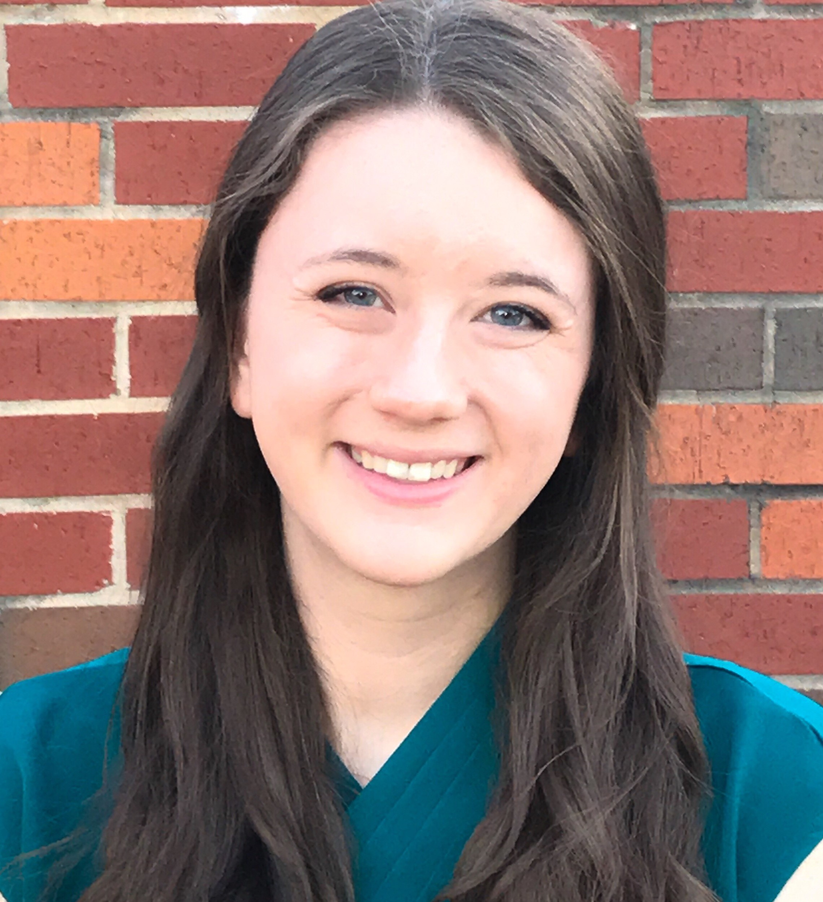
Mattlyn R. Dragoo
- Research Assistant
- M.S. student in ISE
- Email: Mattlyn.R.Dragoo-1@ou.edu
- Mattie joined the HFS lab in Feb. 2017.
- She has been conducting research in Universal Design for Learning (UDL) to increase the performance of FAA Academy candidates.
- Mattie won the "Lindsey F Harkness Endowed Scholarship."
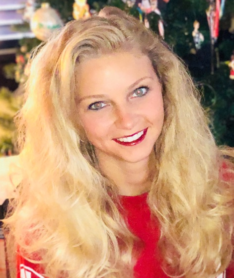
Elizabeth N. Blanche
- Fellowship
- M.S. student in ISE
- Email: elizabeth.blanche@ou.edu
- Mattie joined the HFS lab in Jan. 2018.
- Elizabeth is a B-1 Flight Systems Engineer AFLCMC/WWDNB located at Tinker Air Force Base. She is supported from her work to obtain a M.S. degree. Her M.S. thesis was in designing cockpit interfaces to reduce human error.
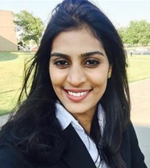
Rashmi Reddy Annadi
- Research Assistant
- M.S. student
- Rashmi Joined the lab from May 2018 until December 2018. She received the Directors Graduate Scholarship award for 2018-2019.
Morgan Corn
- Research Assistant
- Editor/Research Assistant
- Undergraduate student pursuing a B.A. in English Literature and a B.B.A. in Supply Chain Management
- Morgan joined the HFS lab in 2016 and assists in conducting research experiments and editing research documents. She is currently working at a supply chain management consulting company.